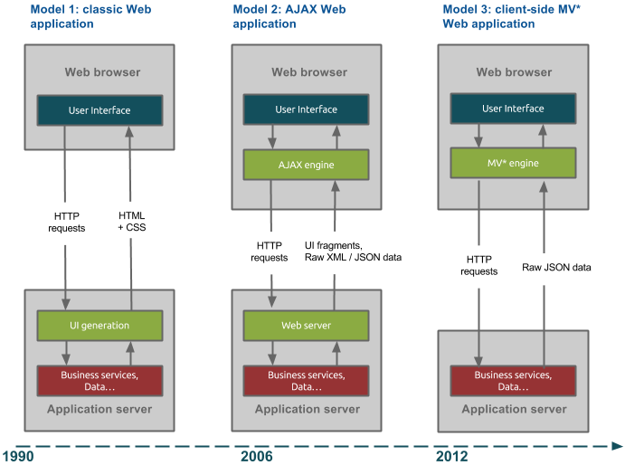

Full-stack разработка
МФТИ
Теория клиент-серверного взаимодействия
Порядок работы
Клиент-серверная модель
Клиент – серверная модель — вычислительная или сетевая архитектура,
в которой задания или сетевая нагрузка распределены между поставщиками услуг, называемыми серверами, и
заказчиками услуг, называемыми клиентами
Структура web-приложений: этап 1
Структура web-приложений: этап 1
-
Frontend
- Отображение статических HTML-страниц (HTML, CSS)
- Контент на страницах, переходы по гиперссылкам
-
Backend
- Хранение статических документов и отдача по запросу по протоколу HTTP
На данном этапе сайты назывались web-ресурсами
Структура web-приложений: этап 2
Структура web-приложений: этап 2
-
Frontend
- Отображение статических HTML-страниц (HTML, CSS)
- Контент на страницах, переходы по гиперссылкам
- Взаимодействие с сервисом посредством форм
-
Backend
- Хранение статических документов и отдача по запросу по протоколу HTTP
- Обработка пользовательских запросов и генерация динамических страниц
- Хранение данных в базе данных
На данном этапе сайты назывались web-сервисами
Структура web-приложений: этап 3
Структура web-приложений: этап 3
-
Frontend
- Хранение и доступ к статическому контенту (файлы стилей, скрипты)
- Генерация и отображение пользовательского интерфейса
- Взаимодействие с пользователем и выполнение запросов к API
- Обновление пользовательского интерфейса в ответ на действия пользователя
-
Backend
- Реализация публичного API
- Хранение данных в базе данных и работа с ними
Сейчас такие сайты правильно называть web-приложениями
Современные web-приложения

Что есть JavaScript?
- ECMAScript — спецификация скриптового языка программирования
- JavaScript — язык программирования, одна из реализаций
спецификации ECMAScript (наряду с JScript и ActionScript), их ещё называют диалектами ECMAScript
- ECMA-262 — стандарт компании Ecma International, по которому
разрабатывается спецификация ECMAScript
- ISO/IEC 16262:2011(E) — другой стандарт, разрабатываемый ISO (в настоящее время активно не
развивается)
Подробнее про
термины
Как это было
- Brendan Eich разработал прототип языка в мае 1995 за 10 дней под кодовым названием Mocha
- В сентябре 1995 в бета-версии браузера Netscape Navigator 2.0 он был выпущен под названием
LiveScript
- В декабре его переименовали в JavaScript
- Июнь 1997 — организация Ecma International выпустила первую версию стандарта
ECMA-262, в котором описывала спецификацию ECMAScript
- Июнь 1998 — спецификация ECMAScript 2 и международный стандарт ISO/IEC
16262
Подробнее про историю развития
Как это было
- Декабрь 1999 — ECMAScript 3
- ECMAScript 4 (abandoned) — заброшенная версия
- Декабрь 2009 — ECMAScript 5
- Июнь 2011 — ECMAScript 5.1 (ISO/IEC 16262:2011)
- Июль 2015 — ECMAScript 2015 (ECMAScript 6th edition) — ES6 Harmony
- Июль 2016 — ECMAScript 2016 (ECMAScript 7th edition)
- Июнь 2017 — ECMAScript 2017 (ECMAScript 8th edition)
- Июнь 2018 — ECMAScript 2018 (ECMAScript 9th edition)
- Лето 2019 — ECMAScript 2019 (и так далее)
Основные типы данных в JavaScript
- Number
- Boolean
- String
- Object
- null
- undefined
Объявление переменных
var i = 10;
let j = 10;
const k = 10;
Поднятие переменных
console.log(foo);
console.log(bar);
console.log(i);
var foo = 'bar';
if (false) {
var bar = 42;
}
for (var i = 0; i < 10; i++) {}
console.log(i);
Поднятие переменных
console.log(foo); // undefined
console.log(bar); // undefined
console.log(i); // undefined
var foo = 'bar';
if (false) {
var bar = 42;
}
for (var i = 0; i < 10; i++) {}
console.log(i); // 10
let / const
if (true) {
let bar = 42;
}
console.log(foo); // ReferenceError
console.log(bar); // ReferenceError
const foo = {a:1};
foo = {a:3}; // TypeError
foo.a = 2;
console.log(foo); // {a:2}
Объекты первого класса
Объектами первого класса (англ. first-class object, first-class entity, first-class citizen) в контексте
конкретного языка программирования называются элементы, которые могут быть переданы как параметр, возвращены из
функции, присвоены переменной.
Функции в JavaScript – объекты первого класса.
Это значит, что в JS можно создавать
функции высшего порядка
Замыкания!
или как работает JavaScript
Лексическое окружение
Все переменные внутри функции — это свойства специального внутреннего объекта
LexicalEnvironment
, который создаётся при её запуске
function sayHello(name) {
const magicNumber = 42;
console.log(`Hello, ${name}`);
}
sayHello('Лаврентий');
// LexicalEnvironment = {name: 'Лаврентий', magicNumber: 42}
Внешние переменные
var otherName = 'Ivan'; // window.otherName = Ivan
function sayHello(name) {
let magicNumber = 42;
console.log(`Hello, ${otherName}`);
}
sayHello('Лаврентий');
// LexicalEnvironment = {name: 'Лаврентий', magicNumber: 42}
// sayHello.[[Scope]] = window
Замыкание
function sum(operand1) {
return function(operand2) {
console.log(operand1 + operand2);
}
}
// const sum = a => b => a + b
let plus3 = sum(3);
plus3(6); // 9
ES6-классы
class User {
constructor(login, password) {
this._login = login;
this._password = password;
}
hello() {
console.log('Hello, ' + this._login);
}
}
ES6-классы: cтатические методы
class MathUtils {
static sqr(number) {
return number * number;
}
static abs(number) {
return number < 0 ? -number : number;
}
}
ES6-классы
const user1 = new User('Alex', 'qwerty123');
const user2 = new User('Jon', 'passw0rd');
user1.hello(); // Hello, Alex
user2.hello(); // Hello, Jon
MathUtils.sqr(6); // 36
MathUtils.abs(-42); // 42
ES6-классы: наследование
class View {
constructor(el) {
this._el = el;
}
hide() {
this._el.hidden = true;
}
}
ES6-классы: наследование
class LoginView extends View {
constructor() {
super(document.getElementById('login'));
this._form = this._el.querySelector('.login__form');
}
hide() {
super.hide();
this._form.clear();
}
}
Ограничения JS в браузере
- Нельзя взаимодействовать с файловой системой
- Нет доступа к сетевым функциям, кроме того, что предоставляет сам браузер
- Нет возможности организовывать многопоточные вычисления. Есть воркеры, но они имеют определённые
ограничения
- Нельзя создавать новые процессы / запускать программы (открытие новых вкладок не считается)